Make a quote sheet in the Quote Directory, send it to factories, bring the prices back and award each style.
Jump to: Start a sheet · Send it · Bring prices back · Award · Samples · What's due · Finish a sheet · Add a factory · The team · Rules · Reference
Screenshots use made-up sample data. Click any picture to see it larger.
Click Open Quote Directory above. On the Tools Hub its tile is called Quoting Directory. The screen says M1S Quote Directory. If it asks, click Sign in with Microsoft.
You'll see Quote Sheets, grouped by month, newest first. Months start closed. Click a month to open it 3, or click Expand all.
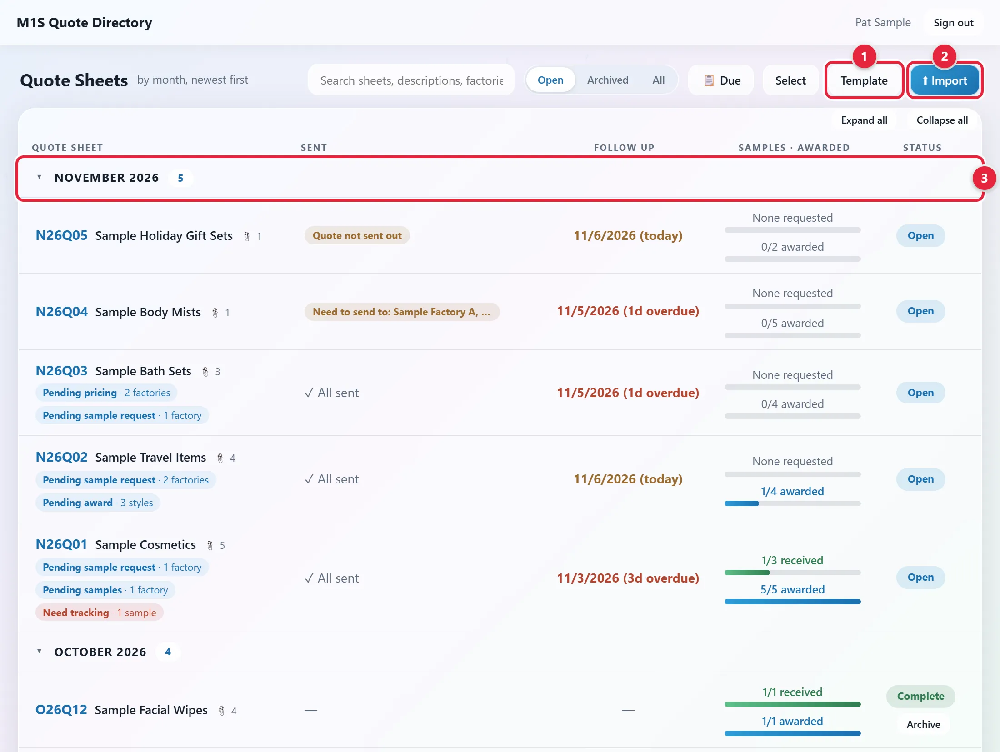
It's at the top right, marked 1 in the picture above. A popup opens.
Type what the quote is for in Description 1. The tool names the sheet for you 2. N26Q06 means November 2026, quote 6.
If it says the sheet looks like the same quote as another one, use its Open button to go to that sheet instead.
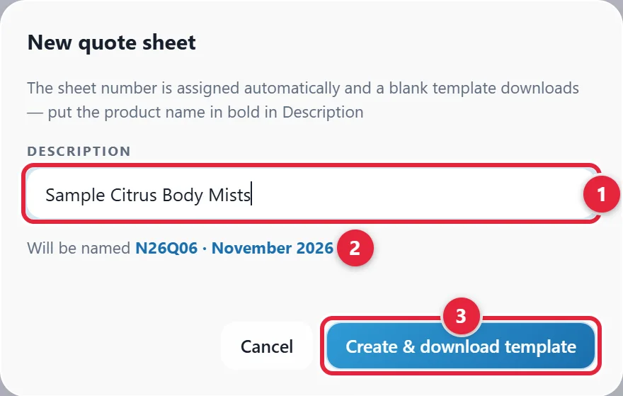
It's the blue button 3. The new sheet opens. A blank Excel file downloads, named with the sheet's name and description.
Put one style on each row. Type its Style #: the sheet's name plus a number, such as N26Q06-01. Add -A or -B for pricing variants of one item. A row with no Style # is skipped when you import.
Is the item already in the Quote Tracker? Quote images and + Scent only link up when the Style # is the same as the item's Style in the Quote Tracker. Saul to confirm which number to use. See the yellow Draft note at the top.
Fill in Package and Qty. Put the product name in bold in Description, and add the Picture. Use Option for what differs, such as the fragrance level.
Leave Price and MOQ blank. The factory fills them in. MOQ means minimum order quantity. Save the file.
| Style # | Picture | Description | Package | Qty | Option | Price | MOQ |
|---|---|---|---|---|---|---|---|
| N26Q06-01-A | (photo) | Sample Citrus Body Mist | Hang tag | 2,000 | 10% concentrate | ||
| N26Q06-01-B | (photo) | Sample Citrus Body Mist | Hang tag | 2,000 | 15% concentrate | ||
| N26Q06-02 | (photo) | Sample Lime Body Mist | Hang tag | 2,000 |
Go back to the Quote Directory. Your new sheet is still open there. Click ⬆ Import factory or compare 1.
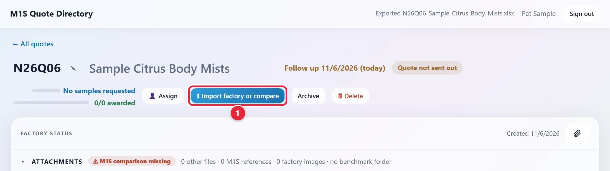
Drag your file into the box, or click Browse…. A line under the box may say No workbooks. You can ignore it.
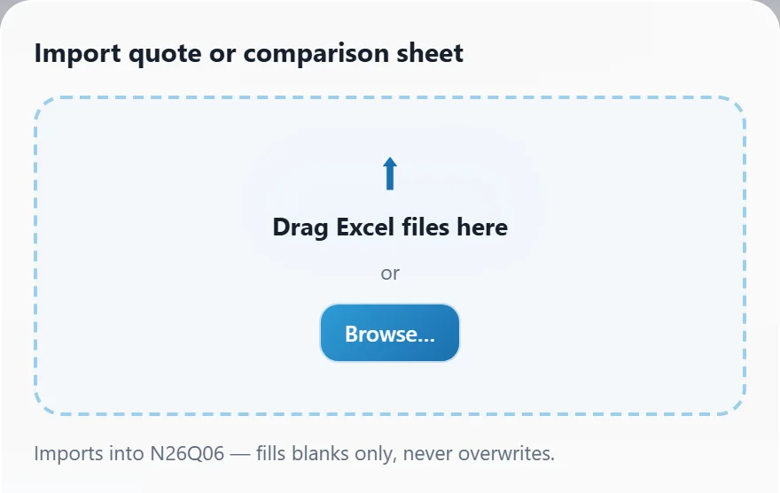
The popup says what the tool found in the file. Click Import 1. Your styles appear under Styles on this quote. A picture in the file becomes that style's Quote image.
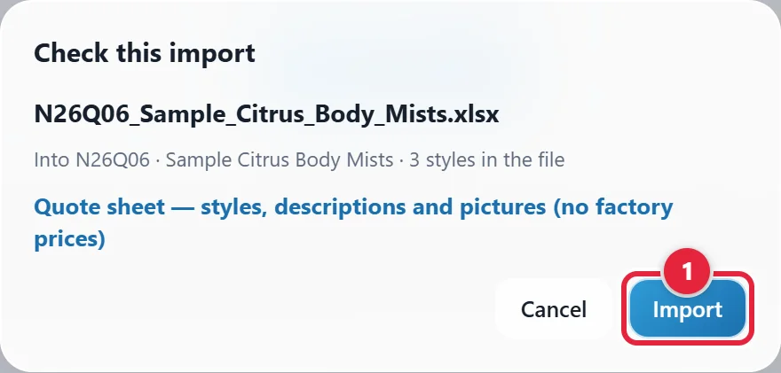
For each style, type the sheet's name in Quote Sheet Name. See Item Intake & Quoting.
Careful with Quote Tracker files. The file's name holds only the date. A second file with the same name goes onto the first file's sheet, and nothing warns you. Factories could then get both sets of styles. To avoid this, rename the file before you import it, so the name says what the quote is for.
Didn't rename it? Read the Into line in the popup 1. If it names an older sheet, one that was already on the Quote Sheets page, click Cancel 2. Click ← All quotes, rename the file and import it again.
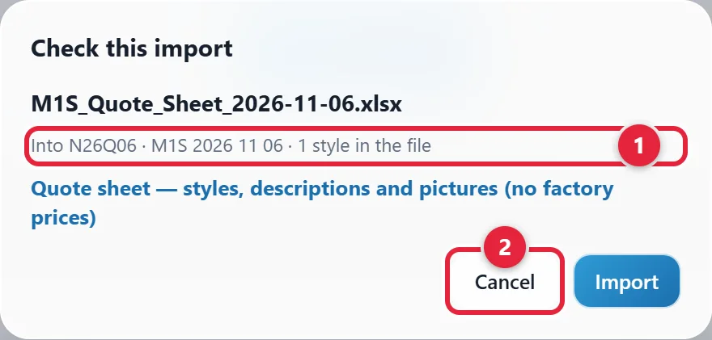
The pictures from here on use other sample sheets, at the stage each step needs.
Under Factory status, open the Add factory… list 1 and pick a factory. Do this for each one. + Add factory opens the same list. Factory not on the list? See Add a factory or change its email.
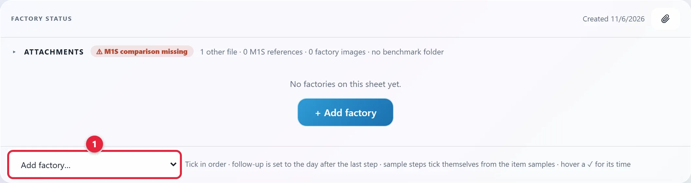
The top of the sheet says Need to send to and lists them 1. Each factory has a row. Its Sent Status box stays empty until the quote goes out 2.
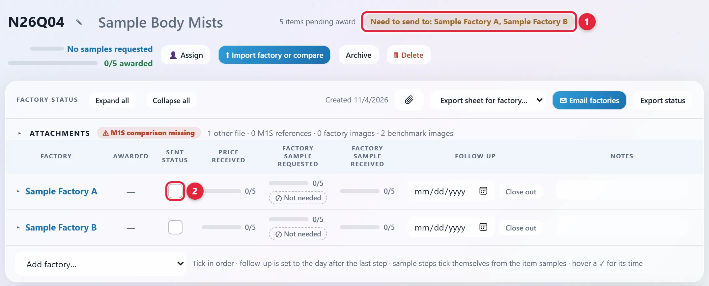
Under Styles on this quote, each factory has its own column. Scroll the grid right to reach the factory columns. Style, Quote image and Artwork stay in place, so Description slides under them, as in the picture.
Price and MOQ show a dash because they're blank 1. Leave them blank. Styles ending in -A or -B are pricing variants of the same item.
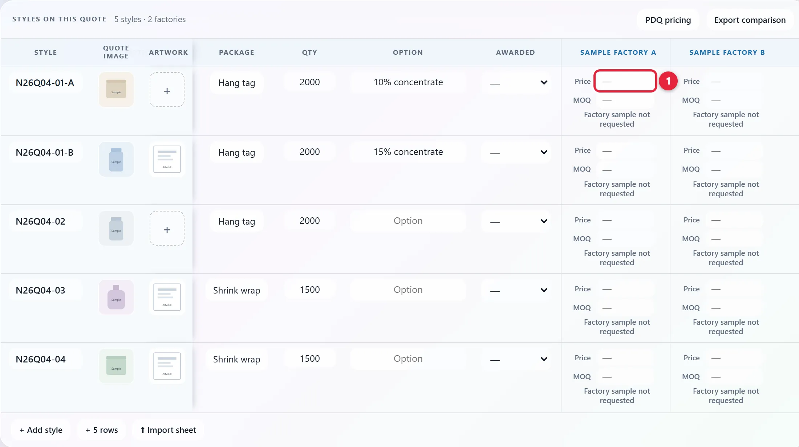
Benchmark pictures show the factory the item to quote. Click Attachments under Factory status to open it. Then find Benchmark under Pictures.
Click Create it if you see it. Pick the item in + Folder… 1. Drag the pictures onto the new folder 2, or click the folder and click + Add 3.
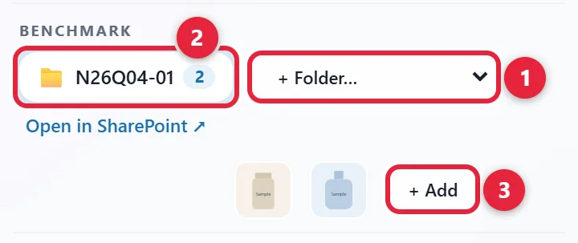
If it says the month's folder is missing, tell Saul.
It's the blue button at the top of Factory status. A popup opens with the email ready to go. Factories that already got the quote start unticked.
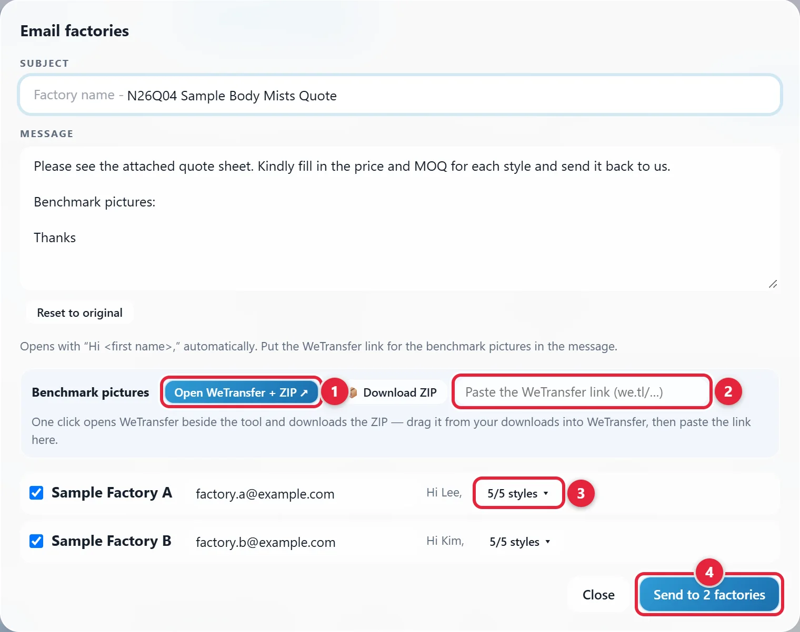
Click Open WeTransfer + ZIP 1. WeTransfer opens beside the tool, and a ZIP of the sheet's benchmark pictures downloads.
Drag the ZIP into WeTransfer. Copy the link it gives you. Paste it into Paste the WeTransfer link 2 in the popup. The link goes into the message.
No benchmark pictures yet? Click Close. Add them as in step 4, then click ✉ Email factories again.
Each ticked factory gets its own email. The subject starts with the factory's name. The message starts with Hi and the contact's first name. The quote sheet is attached.
Check the address beside each factory. You can type over it. A red box means no address is on file, and that factory's email fails until you type one. To keep an address for next time, see Add a factory or change its email.
To leave a style out for one factory, click its 5/5 styles button 3 and untick the style.
The button shows the count, such as Send to 2 factories 4. If there's no WeTransfer link, the tool warns you first.
Microsoft may open a small window the first time you send. Sign in or accept there, and allow popups for this page if your browser blocks them.
The emails go out from your own mailbox, and a ✓ line shows for each one. Read the last line. It says how many went and how many failed. If a line shows ✗, read the reason. That factory stays ticked, so you can click Send again.
Click Close. You'll then see Sent Status ticked for those factories, with a follow-up date of the next day.
On the Quote Sheets page, click the sheet's month to open it, then click its row. The search box finds sheets by name, description or factory, but it doesn't open the months. The number beside a month shows the matches. Click the month or Expand all to see them.
Click ⬆ Import factory or compare. Drag in the Excel file the factory sent back.
The popup shows which factory the file is from 1. If the file name doesn't say, pick the factory. Click Import 2.
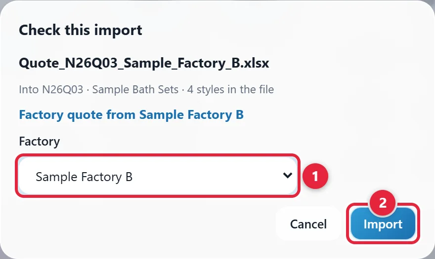
Prices and MOQs fill in under that factory. The line under the grid says what changed 1. To type or change a price by hand, click its box.
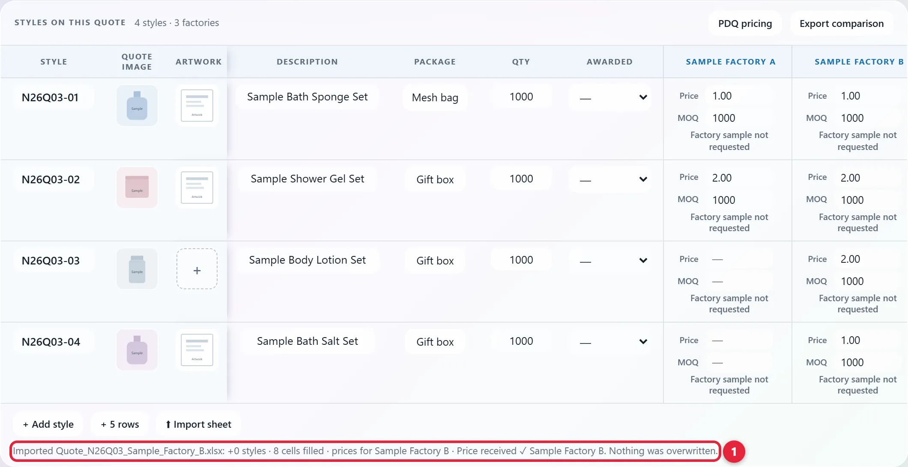
Sent Status shows the date it went out 1. Price Received counts the priced styles 2, and ticks itself when all are in.
Follow up is set to the day after the last step 3. Change the date if you agree a new one. It says overdue when the date has passed.
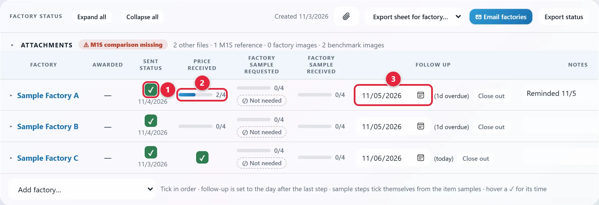
A comparison is one Excel file showing each factory's prices side by side. Click Export comparison at the top of Styles on this quote. Choose the factories, columns and styles. Click Export, and an Excel file downloads.
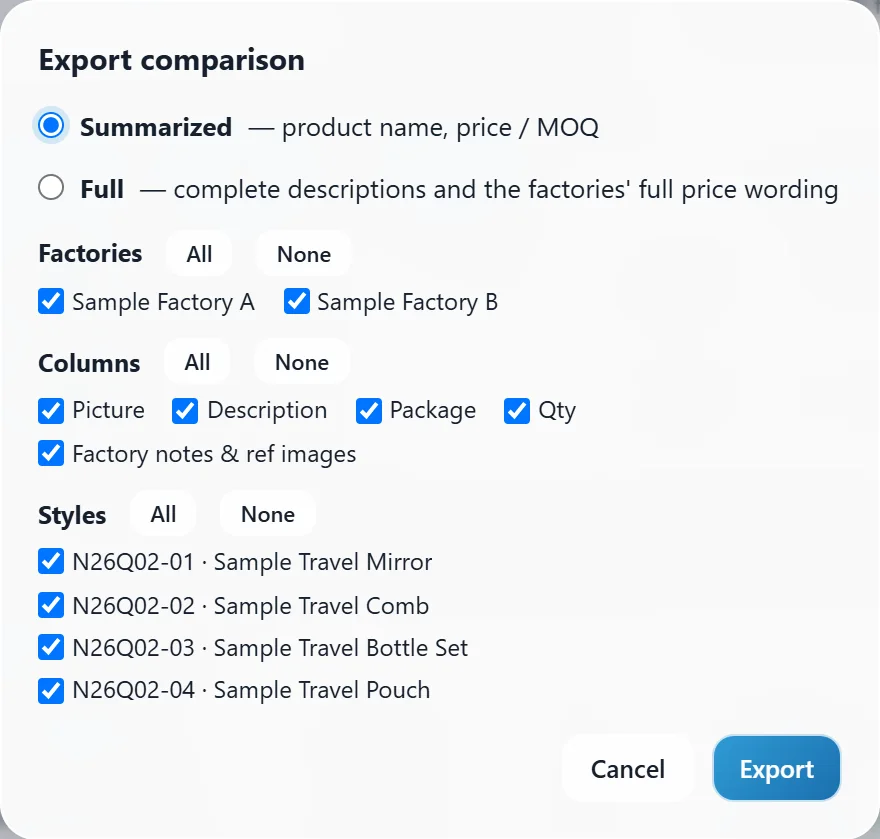
The sheet shows M1S comparison missing until this is done 1. Click Attachments to open it. Click ⬆ Upload 2 and pick the comparison file from step 6. You can also drop the file on that row.
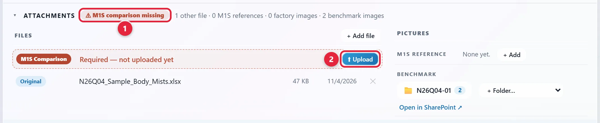
Open the Awarded list on the style's row 1. Pick the factory. Its prices for that style turn green.
Pick Hold if it's not decided yet. Pick N/A if the style is out. N/A styles are left out of factory emails and counts.
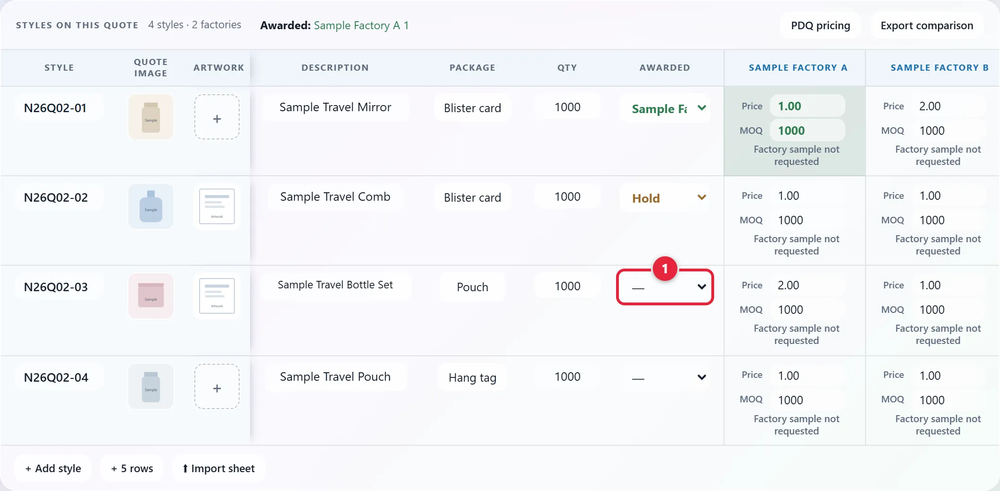
Click Close out in its row under Factory status. It stops getting follow-up dates. Reopen puts it back.
Under Factory status, click the factory's name 1. Its styles open underneath.
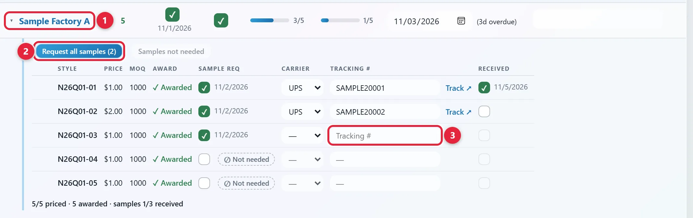
It's above the list of styles 2. An email popup opens.
To ask for just one style, tick its box under Sample req instead. Then click ✉ Email sample request. If a style needs no sample, click its ⊘ Not needed. If the factory needs to send none, click Samples not needed.
Set Sample qty per style 1. Click Send to 1 factory 2. A ✓ line shows in the popup when it has gone. A ✗ line gives the reason it didn't. Fix that and click Send to 1 factory again.
After the ✓, Cancel (undo requests) 3 keeps its name but only closes the popup. Click it to finish.
Changed your mind before sending? The same button takes the requests back. The Factory status ticks stay, as the warning above says.
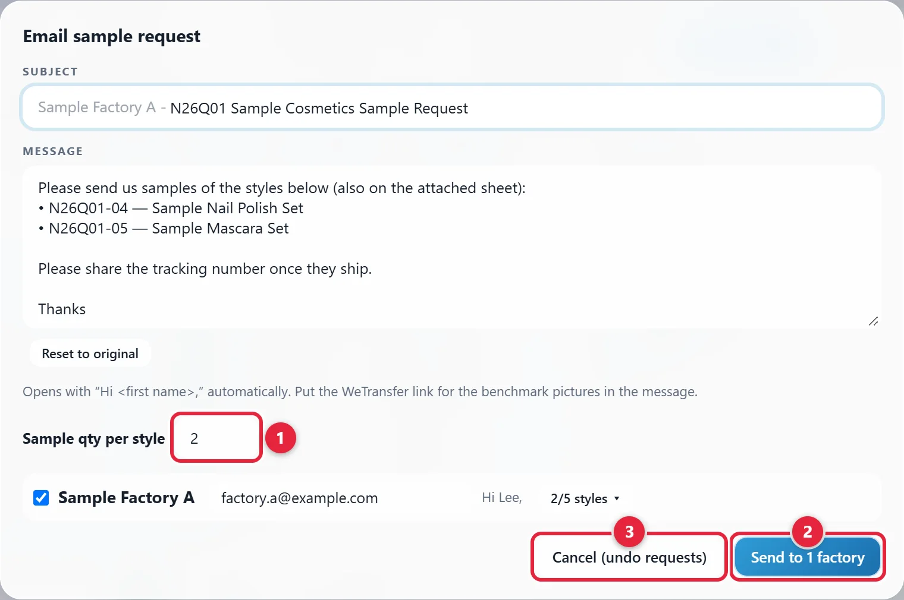
When the factory ships, paste the number in Tracking #. It's the box marked 3 in the picture in step 1. The tool fills in Carrier for most numbers. Track opens the carrier's page.
When the sample arrives, tick the box in the Received column. It stays locked until the row has a tracking number. Factory Sample Requested and Factory Sample Received tick themselves from these boxes.
Use the one you need. These don't go in order.
It's at the top of the Quote Sheets page. You'll see your open tasks under Overdue, Today, Coming up and No date. Click a line to open that sheet. If it says you're not on the team list, ask Saul to add you. Admins do this under Add or remove someone on the team.
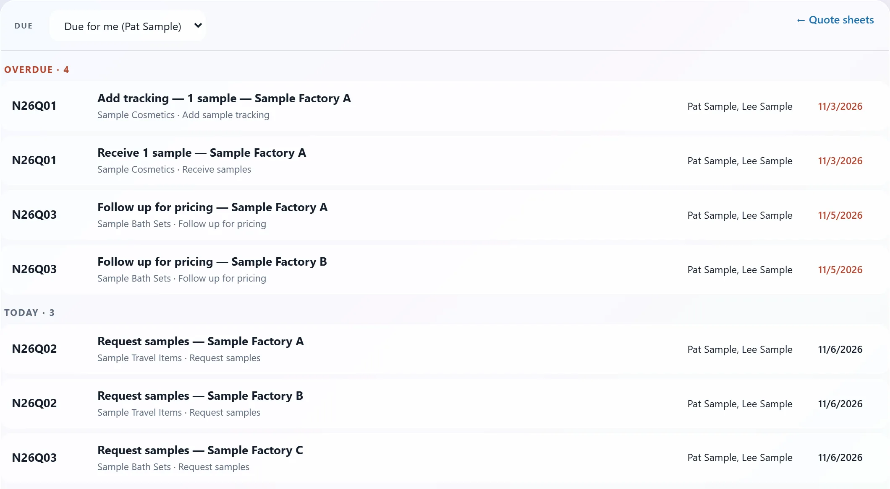
On a sheet, click 👤 Assign, in the row of buttons at the top. Pick a person for a step. Left on By role, the step goes to everyone with a role that covers it. Click Save.
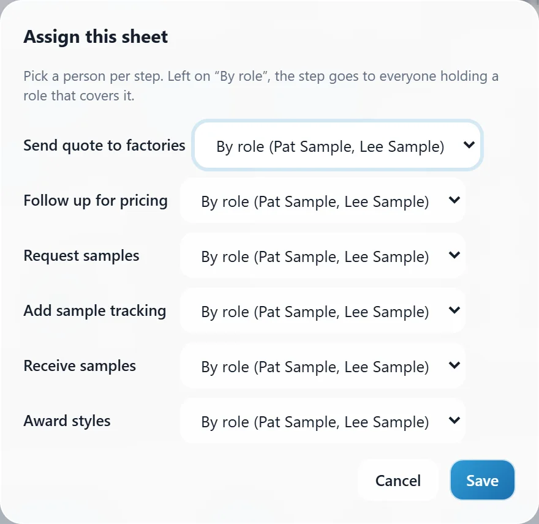
Use the one you need. These don't go in order.
When every factory is finished or closed out, the row says Complete and an Archive button appears 1. Click it.
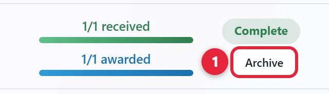
To archive several, click Select at the top 1, click the rows 2, then click Archive in the blue bar 3. While you select, the top button says Done selecting.
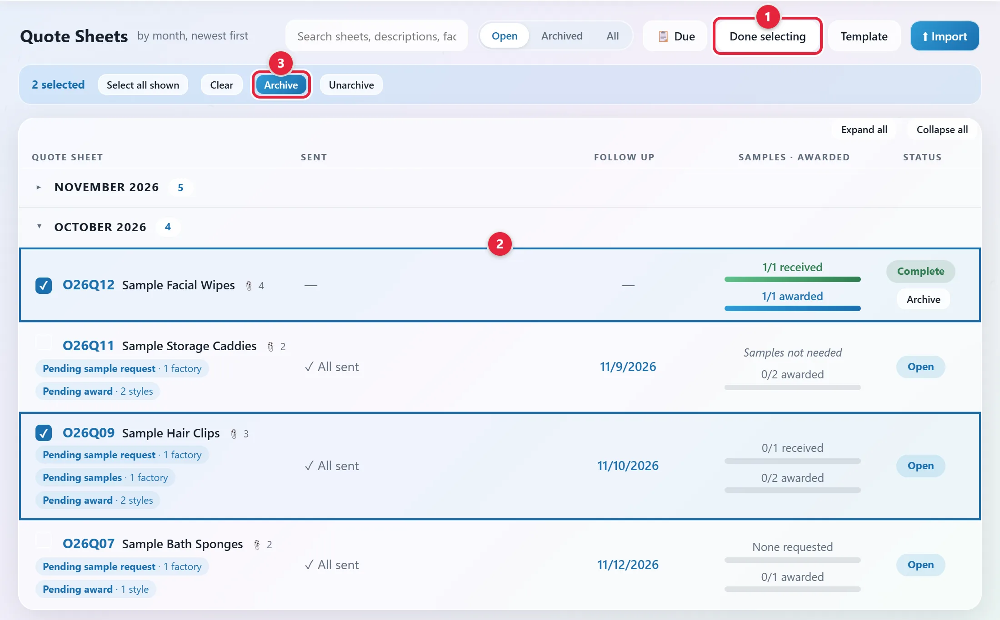
Find them later under Archived 1, by year and month.
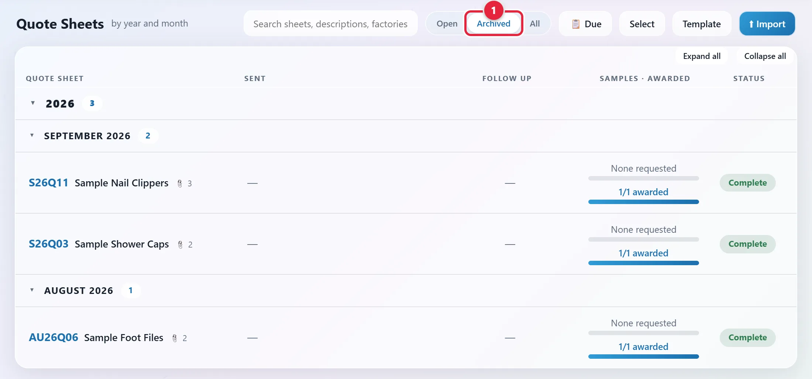
On an open sheet, the button at the top says Archive, or Unarchive to bring it back.
Click the ✎ beside its name 1. Type the new name. Press Enter. To change the description, click it and type.
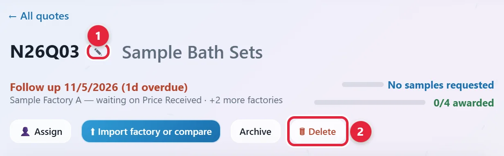
Click 🗑 Delete 2 in the picture above. Click Yes, email Saul 1. Saul gets an email from you, and the sheet's row says Delete req. until he deletes it. Microsoft may open a small window first. Sign in or accept there.
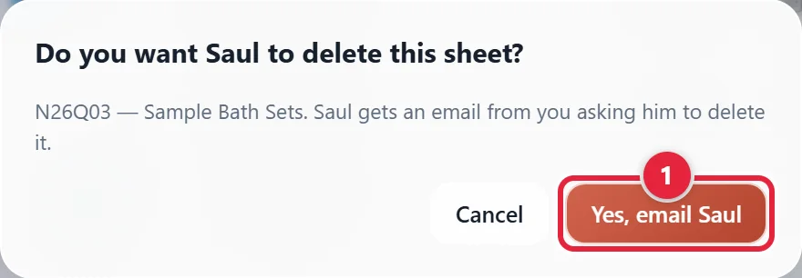
We keep three factory lists. A factory added to one doesn't reach the others. Do the one you need. These don't go in order.
| List | What reads it | Where to change it |
|---|---|---|
| The shared Factories list | The Quote Directory's Add factory… list, its email address and "Hi first name". The Quote Tracker's Supplier list. Fragrance Library. | Factory Emailer, Manage |
| The Order Tracker's list | The factory list on an Order Tracker item | Order Tracker, ⚙, Factories tab |
| Dev PLM's Factories page | The Dev Tracker's Supplier list | Factories in Dev PLM's side menu. Admins only. |
Click Open Tools Hub above, then the Factory Emailer tile. Sign in with your Metro1 Microsoft account if it asks. Click Manage at the top of Factories.
Type the Factory name 1, First, Last and Email. Click Add factory 2. The name and email are required.
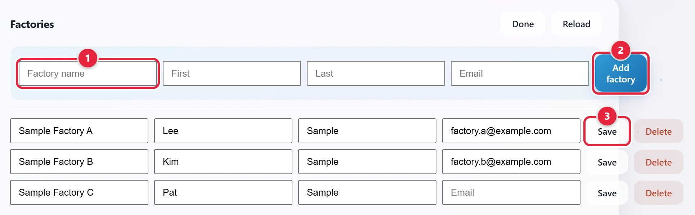
Type over its row and click Save on that row 3. Click Done at the top when you're finished.
Go back to any Quote Directory or Quote Tracker page you have open and refresh it. An open page keeps the list it already read, so the new factory or email doesn't show until you do.
Click Open Order Tracker above, then ⚙ at the top right. Click the Factories tab.
Type its name in New factory 1. Click Add 2. To rename one, type over its name. This needs Edit on the Order Tracker.
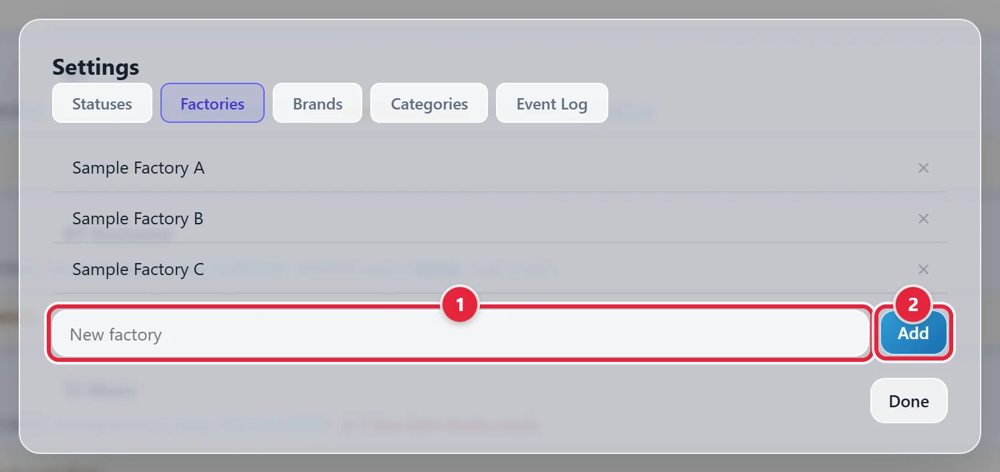
The Factories page is in Preview, so only admins can open it. Not an admin? Ask Saul.
Click Open Dev Tracker above to open Dev PLM. In the side menu, Factories is under Masters. Then click + Factory 1. A popup opens.
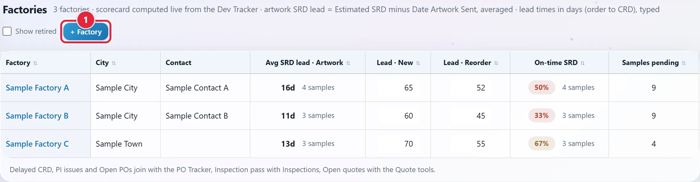
Type the Name 1, which is required. Add the City, Contact and Email 2. Click Add factory 3. It goes on every Dev Tracker factory dropdown at once.
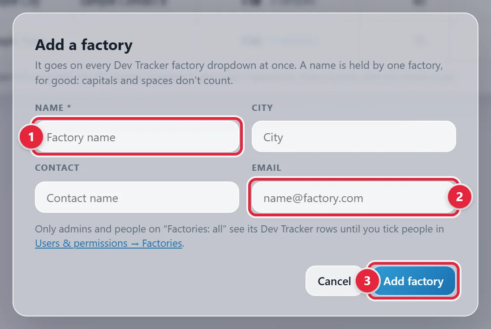
Only admins and people on Factories: all see its Dev Tracker rows until you tick people. Tick them on the Factories tab of Users & permissions. See Give access in Dev PLM.
The team list decides who gets tasks in 📋 Due and who you can pick in 👤 Assign. Only admins see 👥 Team. Not an admin? Ask Saul.
It's at the top of the Quote Sheets page, beside 📋 Due.
Type 2 or more letters in Search the company directory to add someone… 1. Click their name 2. Their row joins the list under People.
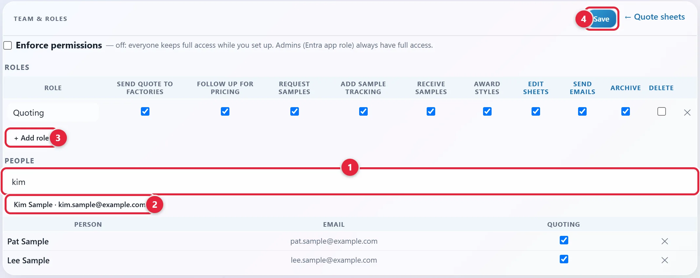
Under People, tick the box in the role's column on their row.
It's at the top 4. Nothing changes until you do. It shows Saving… for a moment, then that word goes away. No other message shows. If it says Couldn't save, click Save again.
Click ✕ at the end of their row, and answer the question. Click Save. The question says their sheet assignments go back to By role, but they don't do this by themselves. A step you gave only to them goes to no one. It shows Unassigned in 📋 Due only when you pick Everyone in the list at the top. To fix it, open that sheet, click 👤 Assign and click Save. The blank list goes back to By role.
Month code + two-digit year + Q + number. The number is the next one for that month. N26Q06 is November 2026, quote 6. MAY26Q08 is May 2026, quote 8.
| Code | Month | Code | Month |
|---|---|---|---|
| JA | January | JUL | July |
| F | February | AU | August |
| MAR | March | S | September |
| AP | April | O | October |
| MAY | May | N | November |
| JUN | June | D | December |
| File | Name the tool gives it |
|---|---|
| Blank template | N26Q06_ |
| Sheet for a factory | Quote_ |
| Comparison | Comparison_ |
| Sample request | Sample_ |
Files named by hand have followed this pattern: [MONTH][YR]Q[##]_
| Column | What goes in it |
|---|---|
| Style # | The style code, such as MAY26Q08-01-A. -A and -B are pricing variants. |
| Picture | The product photo. |
| Description | The product. Put the name in bold. |
| Package | The pack. |
| Qty | The quantity. |
| Option | What differs, such as the fragrance level. A Concentrate column in an imported file goes here too, such as 10% concentrate. |
| Price | Left blank. The factory fills it in. |
| MOQ | Minimum order quantity. Left blank. The factory fills it in. |
| Notes | On the sheet a factory gets. For the factory's notes. |
| Step | How it gets ticked |
|---|---|
| Sent Status | By itself when you email the quote or import that factory's prices. Or click the box. A first sample request ticks it too. |
| Price Received | By itself when every style has a price. N/A styles don't count. A first sample request marks it done too, even if the box still shows a count such as 2/4. |
| Factory Sample Requested | By itself when the first sample is requested. It stays done if the request is taken back. |
| Factory Sample Received | By itself when every requested sample is in. |
| Words | What they mean |
|---|---|
| Quote not sent out | No factories on the sheet yet. |
| Need to send to | These factories haven't been sent the quote. |
| All sent | Every factory has been sent the quote. |
| Pending pricing | Factories sent the quote, with prices still to come. |
| Pending sample request | Factories priced, with samples not yet requested. |
| Pending samples | Samples requested, not all in yet. |
| Need tracking | Samples requested with no tracking number. |
| Pending award | Styles with no winner yet. |
| Open, Complete, Archived | The sheet's status. Complete means every factory is finished or closed out. |
| Delete req. | Someone has asked Saul to delete the sheet. |
| Button | What it does |
|---|---|
| Export status | Downloads a report of each factory's steps and follow-up date. |
| Export samples | Downloads a report of requested samples and tracking. Shows once a sample is requested. |
| PDQ pricing | Gives each factory two prices: with PDQ and without. Export sheet for factory… then has both price columns. The emailed sheet has one Price column. |
| Paper clip | Attaches any file to the sheet. |
| + in Quote image or Artwork | Adds a picture for that style. ↻ replaces it. Quote images are shared with the Quote Tracker when the Style # is the same. |
| + Scent | Shows when the same Style # is in the Quote Tracker with a fragrance Category. Picks the scent from the Fragrance Library. A style that has a scent shows its name instead. |
| ✕ at the end of a row | Shows when you point at the row. Removes that factory or style from the sheet, with its prices, notes and samples on this sheet. It asks first. |
| ⬆ Import sheet | Under the grid. Opens the same import as ⬆ Import factory or compare. |
| ← All quotes | Goes back to the Quote Sheets page. |
Admins also see 👥 Team on the Quote Sheets page. See Add or remove someone on the team.
The Quote Directory doesn't show these. Saul to confirm if they're still used.
| Internal review | Factory side |
|---|---|
| Ready For Review | Sent |
| Reviewed by M1S | Suppliers Replied |
| Fixes Needed | M1S Replied Supplier |
| Fixes Corrected | Negotiation Complete |